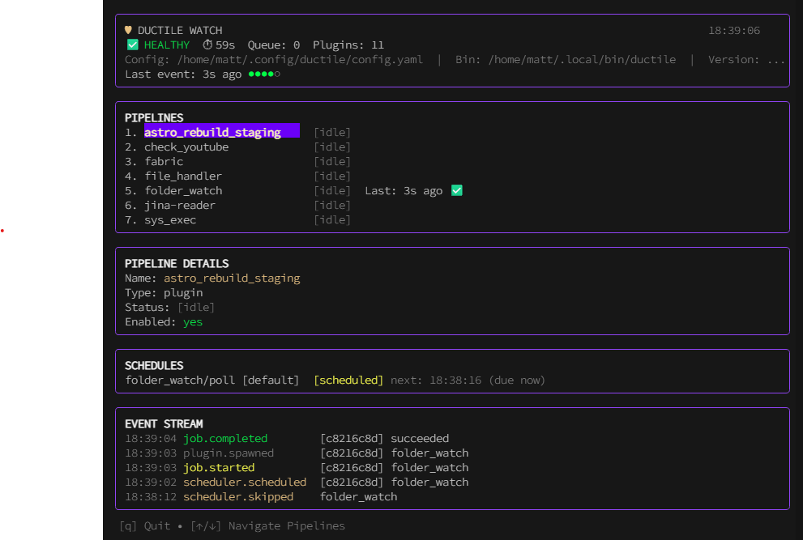

New developer orientation
Ductile in one sitting
A lightweight Go integration gateway that turns local scripts into reliable, event-driven pipelines.
Mental model
Small core, replaceable edges
One Go binary owns scheduling, routing, queueing, retries, state, authentication, and operator APIs.
Plugins are ordinary executables. Python, Bash, Node, Go, and Rust all fit if they speak JSON on stdin/stdout.
YAML describes plugins and pipelines. The runtime turns those declarations into queued jobs and routed events.
Runtime shape
Everything enters the queue
Job lifecycle
At-least-once delivery is the default promise
queued -> running -> succeeded. Results land in the job log. Emitted events route downstream work.
failed and timed_out jobs return to the queue until max attempts are exhausted, then become dead.
Producers can set dedupe_key. The queue prevents repeated work inside the effective TTL.
Plugins should be idempotent because a job can run more than once after a retry or crash recovery.
Pipelines
YAML turns events into orchestration
pipelines:
- name: playlist-to-knowledge-base
on: youtube.playlist_item
steps:
- uses: youtube_transcript
- uses: fabric
- uses: file_handler
- uses: discord_notify
if:
path: payload.status
op: eq
value: readySequential steps, nested steps, pipeline calls, splits, if gates, and with remaps live in the pipeline DSL. Plugins emit events; the router decides which pipeline or step is next.
Data flow
Payloads move separately from artifacts
Small JSON values flow from plugin results into downstream events and step inputs.
Execution metadata lives in event_context and follows the whole pipeline. origin_* keys are immutable.
Each job receives a filesystem workspace. Branches inherit files through zero-copy hard-link clones.
Preflight: load context, ensure workspace, evaluate if, apply with, then spawn the plugin only when the step should run.
Plugin contract
A plugin is just an executable with a manifest
{
"protocol": 2,
"job_id": "uuid",
"command": "poll | handle | health | init",
"config": {},
"state": {},
"context": {},
"workspace_dir": "/path/to/workspace",
"event": {},
"deadline_at": "ISO8601"
}{
"status": "ok | error",
"result": "short summary",
"retry": true,
"events": [],
"state_updates": {},
"logs": []
}Configuration
Config compiles into one runtime model
config.yamlService settings, state path, API listener, worker limits, strict mode, includes, plugin roots.
plugins.yaml, pipelines.yaml, webhooks.yaml, and related files merge in order.
Plugin roots are scanned in order. The first plugin name found wins; later duplicates are ignored.
Code map
Where to look first
internal/queueJob model, enqueue semantics, retry state, and SQLite persistence.
internal/dispatchPreflight, worker execution, plugin spawn, hooks, and result handling.
internal/routerPipeline DSL compile and event-to-step routing.
internal/configYAML loading, includes, integrity checks, validation, and discovery configuration.
internal/apiHTTP handlers, OpenAPI, auth, events, scheduler, and runtime inspection.
plugins/Reference plugin manifests and executable examples.
Operations view
The TUI watches the same events developers debug

The runtime records queue state, job logs, stderr, append-only plugin facts (with derived compatibility views), schedules, and event context in SQLite. The watch UI and API expose that state for diagnosis.
First week workflow
Change behaviour at the boundary that owns it
Create a plugin directory with manifest.yaml and an executable. Use real local fixtures and the protocol envelopes.
Update pipeline DSL, router compilation, or dispatcher preflight based on whether the decision is structural or domain-specific.
Start in queue, storage, scheduler, or dispatch. Keep tests observable and avoid mocks when a real SQLite-backed path is available.
Use the repo scripts: scripts/test-fast, scripts/test-docker, scripts/test-premerge, and the configured linters/security checks.
Takeaways
Ductile is small on purpose
They do domain work and emit events. The Go core owns orchestration and reliability.
YAML, manifests, request envelopes, response envelopes, and database state are the main integration points.
Every job should be inspectable, retryable, and explainable through logs, state, and operator surfaces.